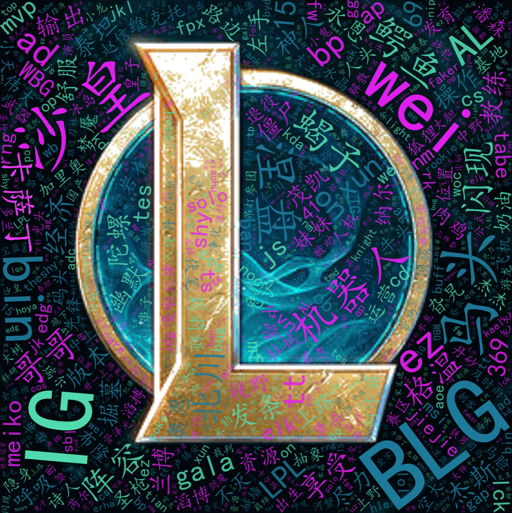

1991 · 街机游戏发行记录
把动作叫出名字
给招式起个名字，交流打法就更方便。
“这套连招怎么接？”
使用情境示意
1991 年，《街头霸王 II》以街机游戏形式发行。[1] 从辨认招式到讨论操作，玩家需要把屏幕上的情况说给别人听。简短的术语，让动作与对战结果有了便于交流的名称。
必杀技连招K.O.
从操作经验，形成共同词汇。

游戏场景如何塑造我们的"黑话DNA"
主播的造梗能力与弹幕的即时玩梗，形成了'黑话'的狂欢广场。'芜湖起飞'、'肉蛋葱鸡'……一个操作，一个口误，都能在瞬间成为全网热词。“黑话”从游戏圈破壁，通过表情包和群聊入侵日常。'肝论文'、'今天又非了'——游戏词汇被赋予了全新的生活化内涵。
我们在国内最大的游戏玩家聚集地之一的Bilibili（B站）爬取了不同游戏tag的视频下超过10万条评论，结合大家自行添加的游戏“黑话”，整理出了一份实时产生、实时更新的游戏“黑话词典”。
从"芜湖起飞"到"肉蛋葱鸡"，这些看似无厘头的词汇背后，蕴含着数字原生代的文化密码。让我们一起探索这些游戏"黑话"的奥秘。
游戏黑话不仅仅是玩家间的交流工具，更是数字原住民一代文化认同的重要载体。从主播直播间的即兴创造，到弹幕文化的集体狂欢，再到日常生活的广泛渗透，这些看似简单的词汇背后，蕴含着深刻的社会文化意义。
通过大数据分析和人工智能技术，我们得以窥见这个庞大语言体系的内在规律：不同游戏类型塑造着不同的语言特色，玩家情感在虚拟世界中得到充分表达，而技术的进步正在加速这种文化现象的演进。
在这个数字化浪潮中，游戏黑话已经成为连接虚拟与现实、个体与群体、传统与创新的桥梁。它们不仅记录着游戏产业的发展轨迹，更见证着一代人的成长足迹，成为我们理解当代青年文化的重要窗口。
语言的演进永不停歇，游戏文化的创新永无止境。在这个充满无限可能的数字世界里，每一个新词汇的诞生，都在书写着属于我们这个时代的独特篇章。
我们基于整理后的游戏黑话词库，构建了本地语义检索系统。输入术语、解释片段或游戏名称后，系统会在词库中匹配相关词条，并展示释义、使用场景、关联游戏与相近词，帮助读者快速理解玩家社群的语言脉络。
输入游戏术语，基于本地词库查看解释和使用场景
正在检索词库...
一句“开团”，既是游戏里的行动，也是一群玩家共同理解的信号。把散落在评论中的词语放到一起，我们可以从分类、共现、情感和时间四个角度，观察游戏黑话的使用方式。
先从旭日图看黑话的分类层级，再沿节点之间的连线，看哪些词经常被一起提起。点击图中的分类或词条，可以展开细节；小扇区和不显眼的节点，也能通过选择菜单找到。
接着回到不同游戏，比较它们的用词构成与情感分布，最后观察类别随时间的变化。同一个词放在不同语境里，可能承担完全不同的沟通任务。
从内向外阅读分类、细类与词条。点击分类展开，看看熟悉的黑话属于哪一支。
在这份分类数据中，“游戏玩法用语”的权重最大。继续展开，可以看到通用表达与不同游戏类型的具体用词。一个熟悉的词既有自己的位置，也与更大的玩法语境相连。
颜色区分一级分类，同一分支沿用相近色。扇区大小按源数据中的频次权重绘制；点击上级分类可展开小扇区，中心返回上一级。分类权重不等于收录词条数，也不代表玩家人数。
沿着词语之间的微光，看看黑话如何在同一段交流里相遇。点击一个词，展开它的关联。
“辅助”与“打野”、“氪金”与“肝”、“开荒”与“副本”——这些共现联系，让单个词回到玩家交流的语境中。试着从一个熟悉的词出发，看看它最常与哪些词一起出现。
概览保留参考图的 96 个词条与 90 条联系，再为非“游戏／玩家”的词，选取一条两端均非这两个泛词的最强联系，合并去重后共 149 条。全部连线来自源数据，权重至少 24。点击词条时，从这 96 个词之间的原始候选联系中展示最强的 12 条。颜色区分词性，点的大小随词频作对数变化；位置用于展开关系，不代表语义距离。共现不等于近义或因果。
从游戏黑话类型使用频率我们不难发现，行为类术语占据各大游戏的主要术语使用。但个别游戏如”原神“”鸣朝“之类的RPG游戏等职业类术语占据较大使用份额
从各游戏术语情感分布可以看出，中性术语占据主流，主要用于日常交流和行为描述。然而，正面和负面术语的分布比例与游戏类型和社区氛围密切相关，竞技类游戏往往呈现更强烈的情感极化现象。
从类别情感雷达图中我们发现，负面情绪主要集中在机制类术语上，这反映了玩家对游戏平衡性、bug修复和体验优化的强烈关注。这种现象揭示了玩家与游戏开发者之间的互动关系。
多游戏术语分布雷达图展现了不同游戏类型的语言特色：MOBA游戏注重团队协作术语，FPS游戏强调战术定位词汇，RPG游戏突出角色职业概念，体现了游戏机制对语言文化的深刻影响。
从数据，回到交流现场
图表呈现词语之间的联系。回到使用它们的场景，我们可以看到术语如何帮助交流，以及部分表达怎样走出游戏。下面沿着四种场景，观察这些变化。
换一个场景，再读一遍
点选词条，对照它在游戏里和日常生活中的用法。
游戏里
这一击让对手破防了。
日常生活中
看到这段告别，我破防了。
同一组字，从防御机制延伸到情绪体验；日常用法既可能是感动，也可能是受伤。 [5]
例句为用法示意；释义依据见相邻来源。
发行记录、游戏规则与词义研究分别标注。场景排列用于说明不同的表达需求，不代表所有词语都经历了同一条演变路线；年份也不等同于词语诞生时间。
公司一手记录；确认《街头霸王 II》街机版于 1991 年发行。并非中文术语的起源记录。
官方机制说明；坦克、治疗与 DPS 的职责。持续更新页面，不用于判定中文叫法的诞生年。
《山东科技大学学报（社会科学版）》25(4)，10–19，2023。第 12 页将“又肝又氪”与劳动、金钱投入相联系。
官方抽取规则；说明保底与抽取机制的关系。此处不将某款游戏的概率、抽数作为通则。
2021-12-08 发布。“破防”条解释游戏中的防御义与日常情感义；入选年份并非造词年份。
《现代语言学》12(7)，211–218，2024。第 213 页讨论“秒杀”的语义泛化；文中列出多种词源说法，本章不作唯一来源判断。
当一个词离开熟悉的游戏，它的意思会随语境改变。
从玩家之间的黑话，到游戏里的名字、称谓与名物，词语的跨语言之旅仍在继续。《黑神话：悟空》提供了一个具体的观察入口：一个名字被怎样写成英文，它背后的故事又能被读懂多少？
悟空 / Wukong · 天命人 / the Destined One · 猪八戒 / Zhu Bajie
名字、人物称谓与器物名称各有不同的语境。可从官方介绍核对用词，再回到故事中理解它们。
官方游戏介绍 ↗一个词跨越语言时，改变的不只是写法。译名可以保留一种陌生的声音，也可以先解释它是什么；而名字背后的故事，还需要人物、情节和玩家的探索来补全。